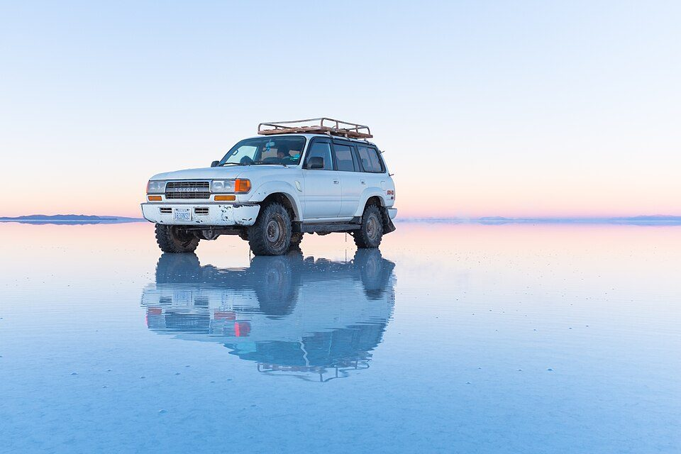

Desiertos
Arena, sal y hielo: el Sahara, el Atacama, el salar de Uyuni y por qué la Antártida es el mayor desierto del planeta.


Un desierto no se define por el calor ni por la arena, sino por la falta de lluvia: es un lugar donde caen menos de 250 mm de precipitación al año y se evapora más agua de la que llega. Los desiertos cubren alrededor de un tercio de las tierras del planeta.
El mayor desierto es de hielo
Con esa definición, el desierto más grande del mundo es la Antártida (14 millones de km²), seguida del Ártico. El mayor desierto cálido es el Sahara, con unos 9,2 millones de km², casi tan grande como Estados Unidos o China.
Solo alrededor de una cuarta parte del Sahara es arena; el resto son llanuras de piedra, montañas y mesetas. Sus dunas pueden superar los 150 metros de altura y moverse varios metros al año.
El Sahara fue verde
Hace entre 11.000 y 5.000 años, un cambio en la órbita de la Tierra desplazó los monzones hacia el norte y el Sahara se llenó de lagos, sabanas, hipopótamos, jirafas y cocodrilos. En sus rocas hay pinturas de pastores con ganado y de gente nadando. Hoy, el polvo del Sahara viaja cada año a la Amazonia, a la que abona con fósforo, y a menudo cubre de barro los coches de España cuando llega la «calima».
El lugar más seco del mundo
El desierto de Atacama, en Chile, es el desierto no polar más seco del mundo. Hay estaciones meteorológicas que nunca han registrado lluvia, y algunas zonas podrían llevar siglos sin una precipitación apreciable. Su suelo es tan parecido al de Marte que la NASA prueba allí sus robots. Y su cielo limpísimo hace que albergue algunos de los mayores telescopios del mundo.
Cuando por fin llueve, el Atacama se cubre de flores en pocas semanas: es el fenómeno del desierto florido.


El espejo más grande del mundo
El salar de Uyuni, en Bolivia, es el mayor desierto de sal del mundo: más de 10.000 km² de costra blanca y casi perfectamente plana, restos de un antiguo lago evaporado. En la estación de lluvias se cubre de una fina capa de agua y se convierte en un espejo gigante que refleja el cielo. Bajo la sal se esconde una de las mayores reservas de litio del planeta, clave para las baterías.


Desiertos de España
España tiene el único desierto de Europa según algunas definiciones: el desierto de Tabernas, en Almería, donde se rodaron decenas de películas del Oeste y escenas de Indiana Jones o Juego de tronos. Otros paisajes semidesérticos son las Bardenas Reales en Navarra y el cabo de Gata.
El gran riesgo es la desertificación: la degradación de tierras secas por el mal uso del agua y del suelo y por el cambio climático. Alrededor de tres cuartas partes del territorio español son susceptibles de sufrirla.
Vivir sin agua
- El camello puede beber más de 100 litros en pocos minutos y aguantar una semana o más sin beber.
- El escarabajo de niebla del desierto del Namib bebe las gotas de niebla que se condensan sobre su espalda.
- La Welwitschia mirabilis, también del Namib, tiene solo dos hojas que crecen sin parar durante más de mil años.
Vídeos para entenderlo mejor
- Desiertos 101 | National Geographic en EspañolNational Geographic España · 105 mil visualizaciones
- ¿Cómo se forman los desiertos? | DW Visión futuroDW Español · 33 mil visualizaciones
Los vídeos son de YouTube y de sus autores. Se cargan solo al pulsar sobre ellos. Ver todos los vídeos →